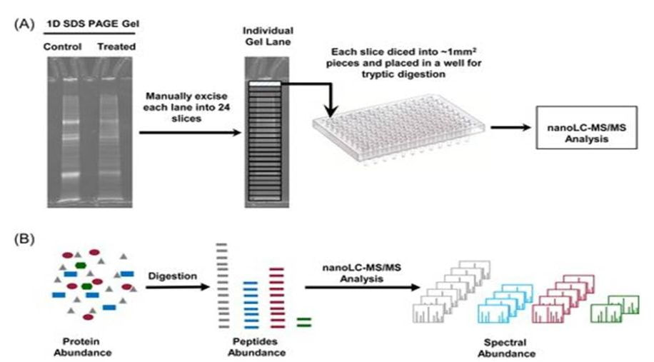

Topic 5: Technologies Used In Systems Biology/Toxicology
LEARNING OBJECTIVES
After completing this lesson, you will be able to:
After completing this lesson, you will be able to:
- Understand the different omics technologies and how they are used.
- Systems biology/toxicology uses very powerful high-throughout platforms/tools such as the “omics” technologies. The human genome was first sequenced in 2003. It took 13 years and was extremely expensive. Advancement in technology has now made it possible to have genome sequencing completed in less than a day. It has also made handling and interpretation of large volumes of data at different levels (gene, transcriptome, protein, metabolic) possible. Scientists across different disciplines are now using these technologies to provide a more holistic approach to disease and toxicity.
A schematic approach for “omics” technologies
Technologies Used In Systems Biology/Toxicology
- Genomics: This refers to the technology which allows us to study the complete genetic material of an organism. This involves DNA sequencing and analysis. Some of the most common methods used for high-throughput genotyping for genome wide association studies (GWAS) include Illumina Omni Arrays which can simultaneously analyze upto 5 million markers per sample. Other examples are the HumanOmni 5 Quad (Omni 5) and the Affymetrix platforms.
- A GWAS involves analysis of genetic variants in different individuals to study particular traits associated with genetic variations. This enables scientists to study the underlying mechanisms of different diseases at the genomic level. Single base pair changes are the most common form of variants of the genome and are known as single nucleotide polymorphisms (SNP). While most of them are functionally harmless, rare ones can lead to changes at the protein level leading to functional impairment and diseases.
Genomics: Example Application
- SNPs that results in functional changes at the protein level thereby causing a difference in phenotype such as a disease state is known as a mutation. These are considered rare genetic variants. An example of a disease state is cystic fibrosis which is cause by multiple mutation in the CFTR gene. This was made possible by genotyping families that were affected by this disease and identifying markers (genetic variants) that could be linked to this disease. This is known as linkage analysis. This type of analysis was also successfully used to identify unique mutations that lead to rare diseases like Huntington’s disease. While this approach has been successful for rare diseases it has been a challenge to utilize this for more common disease states such as cancer, heart and liver disease etc.
Transcriptomics
- Transcriptomics is the study of all transcriptomes (RNA) in a genome. In other words it the study that enables us to study large volumes (> 200,000) of data related to gene expression at the RNA level.
- Traditionally RNA expression was studies through a technique known as Northern blots. But this technique could not handle large volume of data. Current techniques used for high-throughput data analysis are different kinds of microarrays and biochips. The most commonly used are the DNA based microarrays.
- Quantitative gene expression analysis helps us understand the difference in expression of genetic product between different cells,tissues, species etc. Such microaarays are commercially made available from companies lilke Affymetrix, Agilent, Applied Microarrays, Illumina etc.
Different kinds of microarrays:
Analysis of microarray data
- Microarray data is provides relative expression levels of various genes. Quantitaive analysis of microarray data require sophisticated statistical tools and is expressed in the form of a “heat map” which provides expression patterns (upregulation/downregulation of genes) in the form of various colors. Significance analysis of microarrays (SAM is common technique) is a statistical tools that allows for quantitative determination of expression patterns.
- The output which is the heatmap has different colors signifying differential expression patterns. In the example given below red color signifies upregulated gene expression while green signifies downregulation.
Transcriptomics
Proteomics
- Proteomics is the field that studies total proteins in a system. This involves high-throughput profiling of proteins. This kind of expression pattern is especially useful since it allows us to study post translational effects, since all transcription products are not always converted to proteins; however, all functional aspects at the phenotypic level are almost always driven by proteins.
- Proteomics is a powerful tool that can help us in identification of protein biomarkers specific to toxicity due to particular exposures or specific diseases states. Mass spectrometers are commercially sold by several companies such as Waters, Thermofisher, Agilent, Shimadzu, Perkin Elmer etc.
- A mass spectrometer is used for analysis of protemics data. Interpretation requires sophisticated bioinformatics tools.
Rebecca C. Fry. Systems Biology in Toxicology and Environmental Health, Chapter 4 (Kindle Location 1954). Elsevier Inc..
Sample processing and workflow for proteomics studies:

Figure 5. Sample processing and workflow for proteomics studies. Rebecca C. Fry. Systems Biology in Toxicology and Environmental Health, Chapter 4 (Kindle Location 1954). Elsevier Inc..
Metabolomics
- Metabolomics refers to the study of metabolites (low molecular weight products of cellular /biological processes that are found in cells, tissues, biological fluids etc.). Metabolomics provides an understanding of the differences in the biochemistry between different variants (such as diseased and healthy patient populations, control group versus treatment group, high dose group versus low dose group etc.)
- Metabolic profiling can be easily performed in biological matrices such as urine, blood, plasma, serum and also a wide variety of tissues. Hence this can be used very efficiently in human health and safety assessment for evaluating biomarkers for exposure to toxicity to various agents. It can be used in drug discovery in the pharmaceutical industry for comparing metabolic profile between different dose level and control groups. In the clinical setting metabolomics can provide an understanding of differences in metabolite products in diseased versus healthy patient populations.
- Platforms/tools used in metabolomics is similar to proteomics. Liquid chromatography mass spectrometers (MS) are broadly used for metabolite profiling of different biological matrices. Additionally, nuclear magnetic resonance (NMS) imaging is also widely used for metabolomics analysis. A major difference between the two tools is that NMR is a non destructive process and samples used for NMR can be reused for other purposes or returned to the biorepository whereas this is not possible with the LCMS method.
- Metabolomic studies can be conducted using a “targeted approach” where a few selected analytes (metabolites) are analyzed based on hypothetical research. Such studies are mainly performed in early discovery phases. Alternatively, a more “broad spectrum” approach may be used in order to develop biomarkers for certain treatments or specific disease states.
- As with other “omics” approaches, state-of-the art bioinformatics and statistical tools are used for quantitative interpretation of the data generated from metabolomics platforms (LCMS, NMR).
Rebecca C. Fry. Systems Biology in Toxicology and Environmental Health, Chapter 4 (Kindle Location 1954). Elsevier Inc.

Figure 6. Metabolomics Workflow.
|
Metabolomics Workflow
Rebecca C. Fry. Systems Biology in Toxicology and Environmental Health, Chapter 4 (Kindle Location 1954). Elsevier Inc. |
Topic 5: Key Points
In this section, we explored the following main points:
In this section, we explored the following main points:
- The application of the different “omics” technologies in systems toxicology.